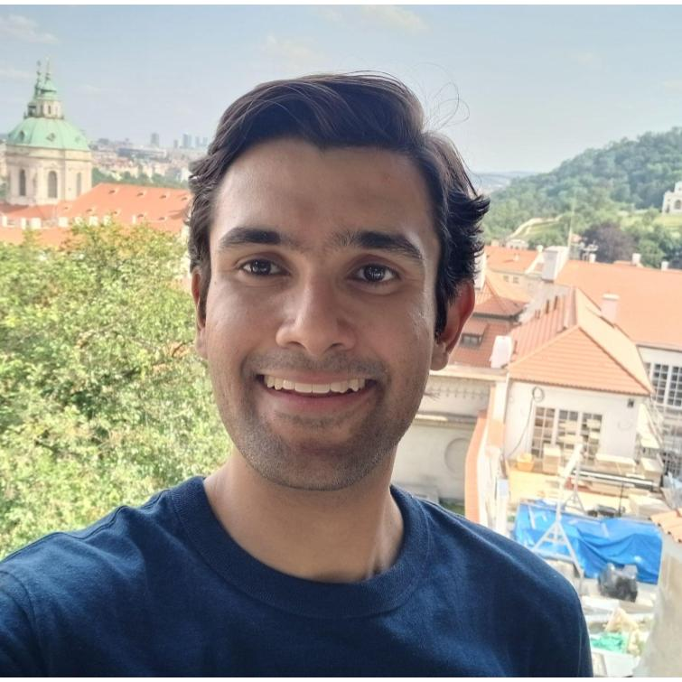
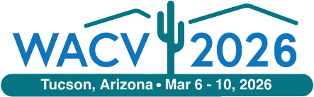
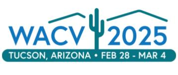
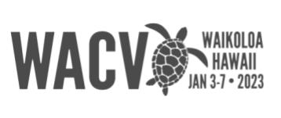
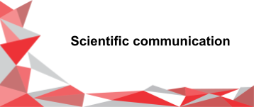

CLIPTTA (NeurIPS 2025)
Une fonction objectif contrastive d'adaptation au moment du test, alignée sur le pré-entraînement de CLIP.

Je suis chercheur scientifique en apprentissage automatique, basé à Montréal, titulaire d'un doctorat en apprentissage robuste et multimodal et fort d'une expérience en industrie appliquée à la compréhension de la vidéo. Ce que j'aime le plus, c'est concevoir de nouvelles méthodes, inspirées de la littérature ou créées de toutes pièces, pour résoudre des problèmes concrets, en particulier autour de la façon dont les modèles représentent les images, la vidéo, l'audio et le texte.
Plus récemment, chez Coactive AI, j'ai affiné des LLM par apprentissage par renforcement (GRPO) pour rédiger des requêtes d'étiquetage vidéo, surpassant GPT-5.2 et remplaçant une API payante. J'ai aussi calibré des plongements (embeddings) sur quatre modalités et conçu des méthodes de fusion de la vision, du texte et de l'audio. Auparavant, pendant mon doctorat, j'ai travaillé en détection d'anomalies industrielles avec Matrox Imaging (maintenant Zebra Technologies), dans le cadre d'une chaire de recherche.
Mon doctorat à l'ÉTS Montréal (LIVIA), sous la direction de Christian Desrosiers et d'Ismail Ben Ayed, portait sur l'adaptation au moment du test (test-time adaptation) : permettre aux modèles de s'adapter à de nouveaux domaines pendant l'inférence, sans étiquettes. Mes articles font partie des premiers travaux dans ce domaine, dont certaines des premières méthodes d'adaptation pour les modèles vision-langage comme CLIP, et ont été publiés à NeurIPS, CVPR, ICCV et WACV. J'ai aussi effectué un séjour de recherche à l'Institut des Systèmes Intelligents et de Robotique (ISIR) de Sorbonne Université, avec Nicolas Thome.
Ces temps-ci, je lis sur l'apprentissage auto-supervisé de représentations, les world models et les modèles à base d'énergie. J'aime aussi enseigner et encadrer. Je suis ouvert aux postes de chercheur scientifique et d'ingénieur de recherche : n'hésitez pas à me contacter.
Une fonction objectif contrastive d'adaptation au moment du test, alignée sur le pré-entraînement de CLIP.

Un banc d'essai de changements de domaine réalistes pour les modèles vision-langage en histopathologie.

Adaptation transductive de CLIP au moment du test.

Moyenne des poids sur plusieurs gabarits de texte pour adapter CLIP au moment du test.
Entraînement au moment du test par estimation contrastive du bruit.
Entraînement au moment du test par regroupement fondé sur l'information mutuelle.

Des flots normalisants pour l'entraînement au moment du test.

Une sélection de présentations de mes travaux.
Que ce soit pour un poste, une collaboration ou une idée en apprentissage automatique, je serai heureux d'avoir de vos nouvelles.